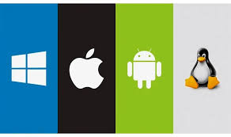
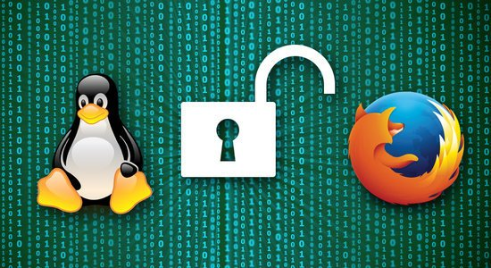
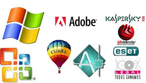
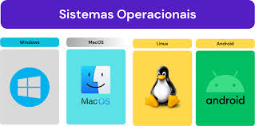
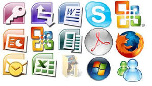

Um sistema operacional (SO) é um software fundamental que gerencia o hardware e os recursos de um computador, além de fornecer serviço essenciais para que outros programas possam funcionar. Ele atua como uma ponte entre o usuário e o hardware do computador, facilitando a execução de tarefas e garantindo que ao recursos sejam utilizados de forma eficiente. Funções principais de um sistema operacional: Gerenciamentos de processos: Controla os programas em execução, aloca um tempo de processamento da CPU e garante quem eles sejam executados de forma ordenada. Gerenciamento de Memória: Organiza memória RAM, garantindo que os aplicativos em execução tenha o espaço necessário para funcionar. Gerenciamento de Armazenamento: Controla com os dados são armazenados e acessados no disco rígidos ou em outro dispositivos de armazenamento. Gerenciamento de dispositivos: coordena a comunicação entre o computador e seus periféricos, como teclado, mouse, impressoras e outros. Interface com o Usuário: oferece gráfica (GUI) ou linha de comando (CLI) para que o usuário interaja com o sistema. Exemplos de sistemas operacionais: Windows (Microsoft) Linux (ex.: Ubuntu, Fedora, Debian) macOS (Apple) Android e iOS (para disponíveis móveis) Os sistemas operacionais são indispensáveis para o funcionamento de qualquer disponível, seja ele um computador, smartphone ou até mesmo um eletrodoméstico.

Também há acesso do código fonte,por outro lado o software gratuito precisa de custo,como por exemplo,os aplicativos podem ser gratuitos,no entanto oferecem algum tipo de custo e codigo fonte não é acessível,também não existe liberdade. Resumindo,o software livre foca no usuário em relação a ele ter liberdade de executa-lo,enquanto o software gratuito foca na ausência de dinheiro,ele pode ser gratuito mas não livre. O software livre é aquele que respeita a liberdade e o senso de comunidade dos usuários. Um software livre tem como aspecto definidor a característica de dar ao usuário a liberdade de copiar, distribuir, modificar e estudar o programa sem pagar ou pedir permissão ao autor. Para garantir essas liberdades, o software livre permite aos seus usuários o acesso a seu código fonte. Um software gratuito, por outro lado, é apenas um programa cujo executável é distribuído de forma gratuita (podendo inclusive ser um software proprietário gratuito), mas que não pode ser modificado ou estudado dada a ausência do fornecimento do código fonte.[15] É perfeitamente possível um desenvolvedor disponibilizar um software como livre e cobrar por ele, contanto que não impeça seus usuários de executar as liberdades de acesso ao código fonte, alteração e distribuição;[16] portanto é possível existir um software.

Software proprietário, também conhecido como software de código fechado, refere-se ao software que pertence a um indivíduo ou empresa e está sujeito a acordos de licenciamento que restringem seu uso, modificação e distribuição. Diferente de código aberto software, o código-fonte do software proprietário não é disponibilizado ao público. Isso significa que os usuários não podem visualizar, modificar ou compartilhar o código subjacente. O software proprietário normalmente é vendido comercialmente e os usuários devem adquirir uma licença para usá-lo. Os termos da licença geralmente incluem restrições sobre como o software pode ser usado, como limitar o número de instalações ou os tipos de dispositivos nos quais ele pode ser executado. Além disso, o software proprietário geralmente vem com suporte ao cliente, atualizações regulares e patches fornecidos pelo desenvolvedor ou fornecedor do software. Muitas vezes, essas atualizações são essenciais para manter a funcionalidade e a segurança do software. No entanto, a natureza fechada do software proprietário significa que os usuários dependem do desenvolvedor para essas atualizações e para corrigir quaisquer bugs ou vulnerabilidades. O controle sobre o software permanece inteiramente com o proprietário, o que pode levar a limitações na customização e custos mais elevados em comparação com alternativas de código aberto.

Software de sistema ou programa de sistema é o software projetado para fornecer uma plataforma para outro software.[1] Exemplos de software de sistema incluem sistemas operacionais como macOS, Ubuntu (uma distribuição Linux) e Microsoft Windows, software de computação científica, mecanismos de jogos, automação industrial e aplicativos de software como serviço.[2] Em contraste com o software de sistema, softwares que permitem aos usuários realizar tarefas orientadas ao usuário, como criar documentos de texto, jogar jogos de computador, ouvir música ou navegar na Web, são coletivamente chamados de software aplicativo.[3] Nos primórdios da computação, a maioria dos softwares aplicativos era personalizada por usuários de computador para atender a seus requisitos e hardware específicos. Em contraste, o software do sistema era geralmente fornecido pelo fabricante do hardware do computador e deveria ser usado pela maioria, ou todos os usuários desse sistema. A linha em que a distinção deve ser tirada nem sempre é clara. Muitos sistemas operacionais agregam software de aplicativo. Esse software não é considerado um software de sistema quando pode ser desinstalado normalmente sem afetar o funcionamento de outro software. Exceções podem ser, por exemplo, navegadores da Web, como o Internet Explorer, onde a Microsoft alegou no tribunal que era um software de sistema que não podia ser desinstalado. Exemplos posteriores são o Chrome OS e o Firefox OS, onde o navegador funciona como a única interface de usuário e a única maneira de executar programas (e outros navegadores da web não podem ser instalados em seu lugar), então eles podem ser considerados (parte de) o sistema operacional e, portanto, software de sistema. Outro exemplo limítrofe é o software baseado em nuvem. Este software fornece serviços para um cliente de software (geralmente um navegador da Web ou um aplicativo JavaScript em execução no navegador da Web), não para o usuário diretamente e, portanto, é um software de sistema. Também é desenvolvido usando metodologias de programação de sistemas e linguagens de programação de sistemas. No entanto, do ponto de vista da funcionalidade, há pouca diferença entre um aplicativo de processamento de texto e um aplicativo Web de processamento de texto.

Na informática, o software aplicativo, aplicativo, ou aplicação (abreviado app),[1][2][3] é um programa computacional projetado com uma linguagem de programação para facilitar o dia-a-dia do usuário de forma intuitiva[4] realizando uma tarefa específica;[2] executar um grupo de funções, tarefas, ou atividades coordenadas para o benefício do usuário (como processador de texto, planilha eletrônica, aplicativo de contabilidade, navegador web, cliente de e-mail, reprodutor de mídia, gerenciador de arquivos, simulador de voo aeronáutico, consola de jogos, ou editor de fotos). O substantivo coletivo software aplicativo refere-se a todas as aplicações coletivamente.[5] Isso contrasta com o software de sistema, que está principalmente envolvido na execução do computador. As aplicações podem ser "empacotadas" com o computador e seu software de sistema ou publicadas separadamente, e podem ser codificadas como projetos proprietários, de código aberto, ou universitários.[6] Os aplicativos criados para plataformas móveis são chamados de aplicativos móveis.

Softwares de Programação são programas ou aplicativos que um técnico ou programador utiliza a fim de criar, editar, depurar, manter ou fazer qualquer intervenção em outros programas e aplicativos.
Programação é o processo de escrita, teste e manutenção de um programa de computador. O programa é escrito em uma linguagem de programação, embora seja possível, com alguma dificuldade, o escrever diretamente em linguagem de máquina. Diferentes partes de um programa podem ser escritas em diferentes linguagens. Diferentes linguagens de programação funcionam de diferentes modos. Por esse motivo, os programadores podem criar programas muito diferentes para diferentes linguagens; muito embora, teoricamente, a maioria das linguagens possa ser usada para criar qualquer programa. Há várias décadas se debate se a programação é mais semelhante a uma arte (Donald Knuth), a uma ciência, à
matemática (Edsger Dijkstra), à engenharia (David Parnas), ou se é um campo completamente novo.